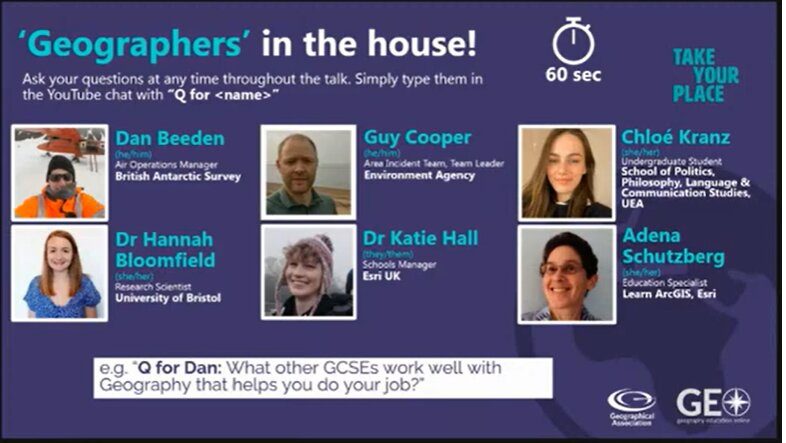
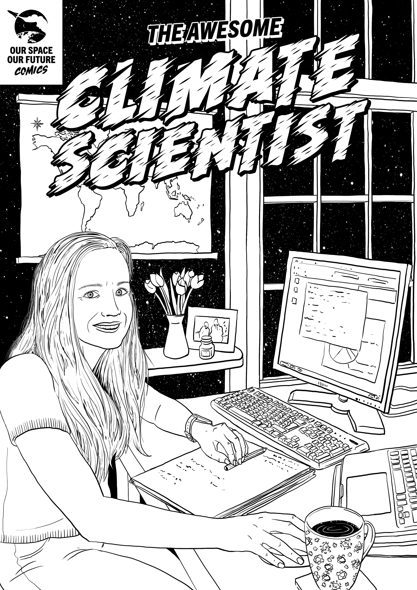
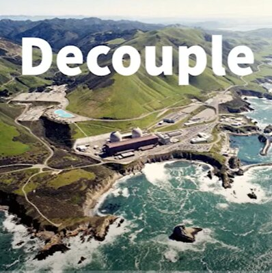

Science Communication
Public Engagement
I really enjoy science communication, particuarly when working with younger people. Some of my favourite activities are described on this page. If any of these activities are particuarly interesting to you and you would like to learn more either drop me an email or check out their websites in the linked videos.
Introductions to my Research
The COVID pandemic meant that many conference talks I have given have now been recorded, which is great for those of you that aren't keen on reading papers. (I don't blame you!) See the playlist below for some recorded conference talks on my recent work and some introductions to energy-meteorology.
Careers talks
Where can geography take you?
A session lead by Kit Rackley where we explored options for future careers using Geography. These ranged from working at the British Antarctic Survey to studying Philsophy, Language and Communication.
Meet the Climate Scientist
Everyone wants to be a superhero right? Well this European Space Agency project made it possible for me. Plus I got to have a fantastic chat about my journey to becoming a climate scientist. Check out the website for the other amazing science career posters.
Podcasts
Gone with the wind
I talk to Decouple podcast about wind droughts and how they've impacted the European power sector
National Science Communication schemes